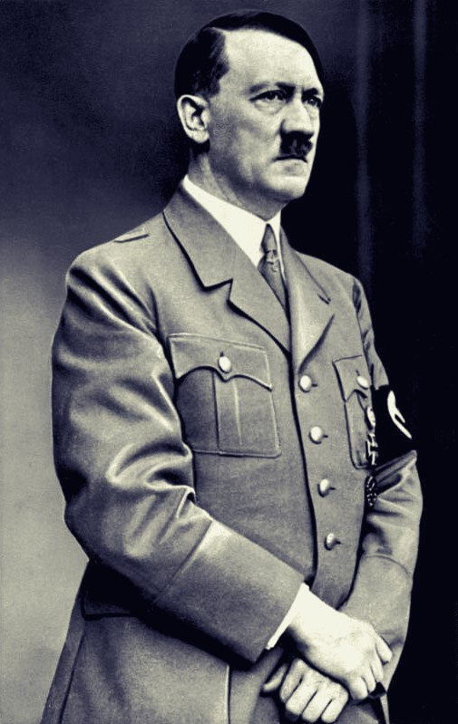
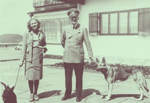
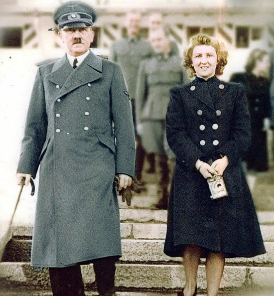
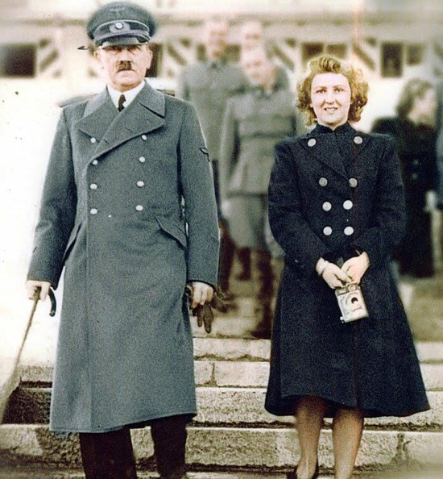
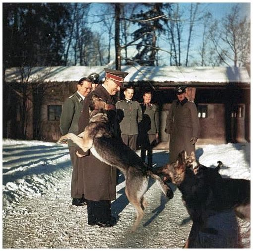
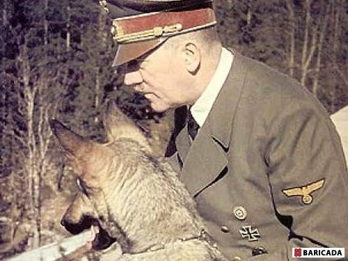
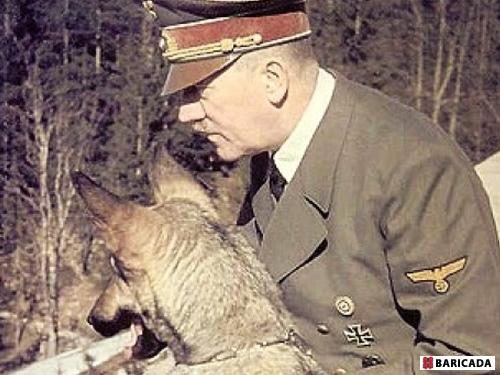

Hitler Adolf (1889-1945), conducator al guvernului si al politicii germane si unul dintre cei mai puternici dictatori ai secolului XX, care a convertit Germania intr-o societate complet militarizata si a lansat cel de Al Doilea Război Mondial.Făcând anti-semitismul un lucru de baza in propaganda si politicile sale, el a construit partidul nazist intr-o miscare in masa. Pentru un timp, a dominat o mare parte din Europa si din Africa de Nord. El a cauzat macelul a milioane de evrei si a altora pe care el ii considera inferiori.
Adolf Hitler, lider al Partidului Naţional Socialist German , cancelar al Germaniei din 1933, iar din 1934 conducător absolut (“Führer”) al Germaniei, a fost singurul responsabil al izbucnirii celui mai distructiv război din istorie.Adolf Hitler s-a născut la 20 aprilie 1889 în Braunau pe Inn, în partea de vest a Imperiului Austro-Ungar. În şcoală nu s-a remarcat, fiind elev mediocru. După moartea părinţilor, în 1907, s-a mutat la Viena unde a încercat să se înscrie la cursurile Academiei de Arte Frumoase, încercare ce s-a soldat cu un eşec. Timp de şase ani a dus o viaţă mizeră în cele mai sărace cartiere ale oraşului, singura să sursă de venit fiind ilustratele cu diferite clădiri din Viena, pe care le picta şi le vindea în cafenele. În mai 1914 a plecat într-un oraş „cu adevărat german“, München. La începerea Primului Război Mondial el s-a înrolat în armată. După terminarea războiului, Hitler şi-a schiţat deja în minte ceea ce urma să devină naţional-socialismul: o gândire bazată pe un anti-semitism crud şi o orientare rasistă asupra societăţii şi a valorilor ei. În anul 1919, a devenit agent al departamentului politic al armatei bavareze, prilej cu care a intrat în contact cu Partidul Muncitoresc German. Adolf Hitler a formulat un program politic în 1920 şi a schimbat numele partidului în Partidul Muncitoresc Naţional-Socialist.

Viața personală a lui Adolf Hitler
Viata personala a lui Hitler a devenit mai relaxata si stabila prin confortul adus de succesul politic. Dupa eliberarea din inchisoare, mergea adesea la Obersalzberg, aproape de Berchtesgaden. Veniturile sale la acea vreme proveneau din fondurile partidului si din articolele publicate in ziarele nationaliste. Era in mare parte indiferent la imbracaminte si mancare, dar nu consuma carne si renuntase la bere (si la orice alte bauturi alcoolice). Munca lui, destul de neregulata, prima. De regula, se scula tarziu, petrecea mult timp la birou si se culca noaptea tarziu. (In imagine, Adolf Hitler si Eva Braun, cunoscuta si ca Eva Anna Paula Hitler, si cainii lor favoriti la casa fuhrerului din complexul de la Obersalzberg in anul 1942. Eva Braun a fost timp de 14 ani amanta si in ultimele 36 de ore din viata, sotia lui Adolf Hitler.) La Berchtesgaden, era insotit de sora sa vitrega, Angela Raubal, si de cele doua fiice ale ei. Hitler s-a indragostit de una dintre ele, Geli, si se pare ca gelozia sa posesiva a determinat-o sa se sinucida in septembrie 1931. Hitler a ramas neconsolat mai multe saptamani. Ceva mai tarziu, Eva Braun, asistenta la un atelier foto din Munchen, a devenit amanta lui. Hitler s-a afisat rareori in public cu ea. Nu voia sa se casatoreasca, socotind ca acest lucru i-ar afecta cariera. Braun era o tanara simpla, cu putine inzestrari intelectuale. Marea ei virtute in ochii lui Hitler era loialitatea de necontestat si, in semn de recunoastere a acestei loialitati, s-a casatorit legal cu ea inainte de moartea lor.



Hitler si câinele lui
În perioada celui de-al Doilea Război Mondial, Hitler căuta soluții pentru a învinge marile puteri din Europa. În acest sens a făcut foarte multe experimente, ajungând să testeze până și câinii, având un singur scop: Germania să câștige războiul! Interesant este faptul că Fuherul, care se traduce „conducător”, era convins că vestita rasă nemţească de ciobănesc deține un creier la fel de performant ca cel uman, doar că patrupedul are nevoie de o pregătire specială pentru a ajunge să comunice cu oamenii.
El a fost foarte mandru de cainele lui, un Ciobanesc German pe nume Blondi. Acesta statea multe ore cu el si il dresa si antrena, e chiar isi intrerupea sedintele cu generalii armatei sale pentru a cainele lui. Astfel generalii si-au dat seama ca daca Blondi era bine si Hitler era mai binedispus, si existau mai multe sanse ca dictatorul sa le asculte sfatul. Daca acest caine nu stia sa-si faca trucurile pe care Hitler i le preda dictatorul devenea ursuz si incapatanat.
"Am avut uneori senzatia ca rezultatul camapaniei din Rusia a depins mai multe de Blondi decat de Hitler", a spus unul dintre ofiteri.


Hitler și simțul umorului 
Toata lumea stie ca Hitler a fost un general nemilos si extrem de furios, dar nu multa lumea stie ca lui ii placea sa faca glume cu cei mai apropiati colaboratori ori de cate ori avea timp liber. Rochus Misch, care acum are in jur de 90 de ani si care a fost telefonis in buncarul lui Hitler din Berlin a povestit: "Hitler, criminalul in masa a avut o serie de glumite pe care le facea". Mai multe situatii in cu glumele lui Hitler au ajuns sa fie redactate in "Cartea lui Hitler", care a fost scrisa de Iosif Stalin.
Înainte de a dezlănţui Al Doilea Război Mondial asupra lumii, Adolf Hitler era un om preocupat de artă. Atât de preocupat şi pasionat încât a încercat de două ori să intre la reputata Academie de Arte Frumoase din Viena. Profesorii i-au interzis visul de a deveni unul dintre pictorii cunoscuţi ai lumii, fiind de părere că Hitler nu era “potrivit pentru pictură”.
În autobiografia sa, „Mein Kampf”, Adolf Hitler a descris cum, în tinerețe, își dorea să devină un artist profesionist, dar aspirațiile sale au fost ruinate, dupăd ce a picat examenul de intrare la Academia de Arte din Viena. A fost respins de două ori de, în 1907 și în 1908, potrivit The Telegraph. Profesorii acestui instutut considerau că este mai talentat la arhitectură decât la pictură.
Un grup de academicieni a estimat că Hitler a realizat în jur de 300 de picturi de-a lungul vieții sale, însă, el a menționat în „Mein Kampf” că pe perioada petrecută la Viena făcea trei lucrări pe zi. Chiar dacă ar fi pictat o singură dată pe zi, în anii petrecuți la Viena, numărul lucrărilor lui Hitler ar ajunge la peste 600.
Un grup de academicieni a estimat că Hitler a realizat în jur de 300 de picturi de-a lungul vieții sale, însă, el a menționat în „Mein Kampf” că pe perioada petrecută la Viena făcea trei lucrări pe zi. Chiar dacă ar fi pictat o singură dată pe zi, în anii petrecuți la Viena, numărul lucrărilor lui Hitler ar ajunge la peste 600.
Adolf Hitler era ipohondru şi abuza de droguri, consumând regulat un cocktail de amfetamine, spermă de taur, otravă pentru şobolani şi morfină.Liderul nazist încerca cu disperare să arate că este viril şi consuma peste 80 de tipuri de droguri în fiecare zi, fapt despre care medicii şi istoricii spun că l-a transformat într-un criminal cu sânge rece.
"Problema nu este dacă Hitler era dependent de amfetamine sau nu, ci faptul că avea tulburare bipolară, iar amfetaminele au amplificat boala. Acest lucru nu a mai fost explicat până acum şi explică de ce Hitler s-a schimbat la sfârşitul anilor 1930 şi 1940".
Un raport medical arată că liderul nazist avea eczeme cronice şi crampe ale stomacului. Hitler consuma cocaină "pentru a-şi curăţa sinusurile" şi picături pentru ochi dizolvate în cocaină.
Metodele medicului Morell erau extrem de controversate, alţi medici fiind de părere că acesta era un agent dublu care încerca să îl otrăvească pe Hitler. Morell deţinea ulei folosit pentru curăţarea armelor, care era interzis consumului uman, şi pastile împotriva flatulenţei fabricate din otravă pentru şobolani.
Însă alţi experţi sunt de părere că aceste speculaţii încearcă să îi găsească scuze liderului: "Cu doar 48 de ore înainte de moartea sa, Hitler şi-a dictat testamentul, lucid şi alert ca întotdeauna. Capacităţile sale mentale erau normale. Evreii nu au fost ucişi pentru că Hitler era bolnav, ci pentru că majoritatea germanilor i-au ascultat ordinele. Hitler a ştiut întotdeauna ce face", a declarat Hans-Joachim Neumann, autorul cărţii "A fost Hitler bolnav?".
Morell îl injecta pe Hitler cu extracte din testicule de tauri tineri, pentru ca acesta să facă faţă cerinţelor tinerei sale iubite Eva Braun.
"Eva Braun era tânără şi mult mai în formă. Hitler era mai bătrân, leneş, nu făcea exerciţii şi îl punea pe Morell să îl ajute înainte de a petrece noaptea cu femeia", spune psihiatrul Ghaemi.
Notele lui Morell arată că liderul nazist se temea de cancer şi devenea paranoic la gândul că ar putea răci.
Medicul, care l-a tratat pe Hitler în timpul rîzboiului, a recunoscut că i-a administrat opiu, morfină, barbiturice şi amfetamine. Pe baza acestor declaraţii, unii istorici sunt de părere că atitudinea extremă a liderului a fost influenţată de droguri.
Cum ar fi fost daca...?!
Ce s-ar fi întâmplat cu Germania anilor 1908-1945 în cazul în care Adolf Hitler ar fi fost acceptat la Academia de Arte Frumoase din Viena ca pictor?! Ce s-ar fi întâmplat dacă Adolf Hitler ar fi murit înecat în râul Inn fiind salvat de un alt băiat ajuns preot catolic mai târziu!?
Cum ar fi fost secolul XX fără Hitler și măcelul provocat în urma Holocaustului și a celui de-Al Doilea Război Mondial?!
Ce s-ar fi întâmplat dacă Adolf Hitler ar fi căzut victimă unui atentat din 1939 pus la cale de către Marea Britanie care s-a răzgândit în ultimul moment să anuleze asasinatul?!
Astfel ar fi decurs lucrurile daca presupunem ca, in cadrul ceremoniei festive desfasurate cu ocazia zilei de nastere a lui Hitler, din 20 aprilie 1939, atasatul militar britanic Noel Mason-MacFarlane ar fi reusit sa-l impuste. A existat un asemenea plan care, in ultimul moment, a fost anulat dupa ce Londra a considerat ca o astfel de miscare ar fi fost meschina si extrem de nesportiva.
Cu siguranta, acest moment ar fi schimbat istoria lumii. Fara Hitler este putin probabil ca Al Doilea Razboi Mondial ar fi izbucnit. Daca nu ar fi existat teama lui Hitler ca ar putea fi atacat de Uniunea Sovietica si daca nu ar fi fost dorinta lui de a anexa teritoriile din Est, conducerea militara a Reich-ului nu ar fi considerat ca Germania ar trebui sa poarte un razboi de tip preventiv.
Evreii ar fi supravietuit...
Din pacate, persecutia impotriva evreilor nu ar fi incetat, dar nu ar mai fi avut loc exterminarile in masa. Daca s-ar fi ajuns la relatii de pace intre Germania si fortele occidenatele, probabil, Stalin s-ar fi multumit doar cu acapararea Poloniei, Razboul Rece ar fi inceput mult mai devreme de 1945, iar intre granitele sale din 1937 Germania ar fi jucat un rol de bariera naturala impotriva miscarilor revolutionare din Europa de Est.
Un atentat soldat cu moartea lui Hitler, in 1939, probabil ca nu ar fi impiedicat perpetuarea regimului nazist in Germania. Fara charisma lui Hitler si influenta sa, in partid ar fi aparut fisuri care ar fi cauzat distrugerea sistemului monopartinic, asa cum s-a intamplat in Spania, Italia, Portugalia si Grecia. Prin urmare, Germania ar fi devenit o democratie parlamentara de-abia prin 1968.